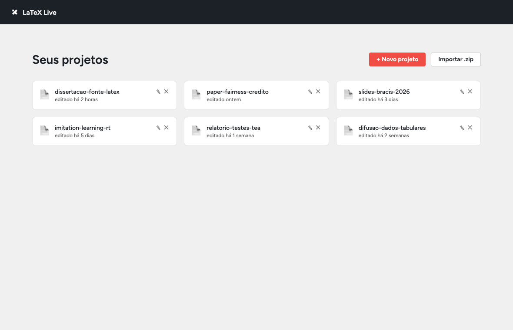
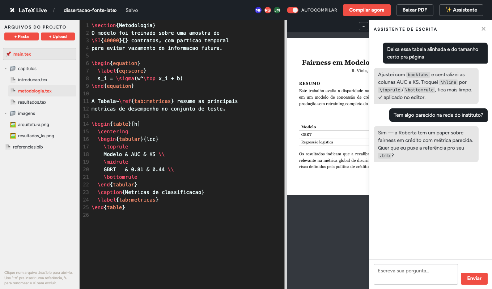

Uma dor real, não um capricho
Toda vez que era preciso editar a dissertação, o mesmo obstáculo aparecia: o plano gratuito do Overleaf simplesmente não dava conta. Documentos teóricos longos, cheios de referências e imagens, travavam na hora de compilar. A saída era pedir para o orientador em Bristol, a quatro fusos horários de distância, para ceder acesso à conta paga dele só para renderizar o próprio trabalho.
Isso significava esperar: esperar o fuso fechar, esperar resposta, esperar liberação, só para editar uma ideia que já estava pronta agora. Foi esse atrito acumulado, repetido a cada ciclo de escrita, que levou à decisão de parar de pedir e construir uma alternativa própria.
De ideia a protótipo em um fim de semana
A ideia estava na cabeça havia meses, mas ficou parada até um fim de semana de setembro de 2026. Em cerca de 18 horas de trabalho, parte delas de madrugada, nasceu o LaTeX Live: um editor colaborativo que compila com Tectonic (motor LaTeX que baixa pacotes sob demanda, sem precisar instalar o TeX Live completo), com criação de projeto do zero, importação de ZIP no mesmo formato do Overleaf, pastas, edição simultânea e preview de PDF renderizado com PDF.js.
Sem investir em servidor algum: a aplicação roda no próprio notebook e é exposta pela internet através de um túnel Cloudflare gratuito. Custo de operação até aqui: zero.
Não é só a minha dor 5 conversas independentes
Antes de levar a ideia adiante, veio a pergunta óbvia: será que esse problema é só meu? Para responder sem viés, cada conversa começou pelas mesmas perguntas abertas sobre o uso do Overleaf, sem mencionar a alternativa de antemão, numa espécie de teste cego.
O resultado foi consistente em cinco conversas independentes, com pessoas de contextos diferentes: pesquisa (Roberta, Gean, Isadora, Juarez) e o time de Testes e Aplicação (Karen). Todas relataram a mesma combinação de dores: limite de compilação em documentos grandes, número restrito de colaboradores no plano gratuito, dependência da conta Pro de terceiros, e um assistente de IA nativo do Overleaf que, na prática, ninguém usa.
O que já funciona hoje
Não é uma maquete: testado ao vivo com as cinco pessoas entrevistadas, rodando em localhost:4173 hoje.
Tela de projetos
Print real do app rodando localmente.

Editor com assistente de IA aberto
Print real: CodeMirror à esquerda, preview de PDF ao centro, chat do assistente à direita.

Por que isso é melhor que o Overleaf
- Custo zero na operação atual, contra planos pagos que variam entre R$20 e R$70 por pessoa por mês
- Sem limites artificiais: compilação, upload e tamanho de projeto são configuráveis (
COMPILE_TIMEOUT_MS,MAX_UPLOAD_MB) e limitados só pelo hardware, não por plano - Dados próprios: os projetos ficam em disco, local ou no seu servidor, não na nuvem de um terceiro
- IA já integrada, não só planejada: assistente com Claude rodando dentro do editor, vendo o arquivo aberto como contexto
- Evolução guiada por dor real, validada com pesquisadores de diferentes áreas, não por suposição
Para onde isso vai visão de produto
O diferencial da proposta não é reinventar o editor LaTeX, ele já existe e funciona: é o que passa a ser possível quando o instituto adota uma plataforma própria. Nenhum destes pontos existe ainda; são a direção, não o estado atual.
- Tags de ciclo de vida do documento: rascunho, em submissão, publicado, hoje o acesso é só por uma senha única compartilhada
- Templates institucionais para as principais conferências da área (citadas nas conversas: BRACIS, ICML, ICLR, entre outras)
- Busca semântica e mapeamento de conexões entre pesquisadores trabalhando em temas correlatos, no espírito do Connected Papers
- Extração automática de insights e possíveis papers a partir da documentação de projetos, útil também para times como o de Testes e Aplicação
- Espaços privados e públicos por pessoa ou por time, e histórico de versões (hoje não existe controle de quem editou o quê)
Grafo de relação de conteúdos
Conceito, ainda não implementado: pesquisadores e temas conectados automaticamente por proximidade de conteúdo. Clique num trabalho no grafo para ver o resumo do conteúdo, sem sair da tela.
Privacidade e governança
Hoje: o acesso ao site inteiro é controlado por uma única senha compartilhada (SITE_PASSWORD), comparada no servidor. Não existe conta por pessoa nem controle fino de quem pode editar o quê, além dessa senha, e não há histórico de versões.
Visão: documentos marcados como rascunho ficariam estritamente privados, nunca alimentando a nuvem de contexto nem treinando nenhum modelo. Apenas documentos em submissão ou já publicados entrariam nessa camada de visibilidade institucional, o suficiente para dar a gestores como Barros uma visão real do que está sendo produzido, sem expor o trabalho em progresso de ninguém. Esse desenho seguiria os princípios da LGPD.
Quanto isso custa estimativa preliminar
O README do projeto já documenta dois caminhos de hospedagem sem custo de engenharia extra: Hugging Face Spaces (SDK Docker, exige conta PRO a US$9/mês, com um Storage Bucket pra persistir os projetos) ou um túnel Cloudflare gratuito a partir de qualquer máquina sempre ligada, como um servidor de laboratório. Os dois funcionam bem para o grupo de beta testers de hoje, mas nenhum foi dimensionado pra 100 pessoas usando ao mesmo tempo.
Dimensionando para 100+ pessoas
Hoje o LaTeX Live roda como um processo Node único: Express, a colaboração em tempo real (Yjs + Hocuspocus) e a fila de compilação do Tectonic, tudo na mesma porta, salvando os projetos direto em disco. Isso já aguenta bastante gente sozinho, mas para garantir folga com pelo menos 100 pessoas simultâneas existem dois caminhos:
- Vertical (mais simples): uma única máquina bem mais forte (8 vCPU / 16GB), sempre ligada, sem mudar uma linha de código. Provavelmente suficiente, já que cada projeto já compila na sua própria fila.
- Horizontal (cluster, mais garantia de folga): 2+ instâncias do app atrás de um load balancer. Isso exige duas mudanças reais de código: um backend Redis para o Hocuspocus sincronizar a edição em tempo real entre instâncias, e um storage compartilhado (tipo NFS/EFS) no lugar do disco local, para todas as instâncias enxergarem os mesmos projetos.
| Item | Estimativa mensal (BRL) |
|---|---|
| Tier 1 · vertical: 1 nó, 8 vCPU / 16GB, disco persistente | R$500 – R$900 |
| Tier 2 · cluster: 2+ nós (2 vCPU / 4GB cada) + load balancer | R$260 – R$500 |
| Redis (sync do Hocuspocus entre nós, só no Tier 2) | R$60 – R$90 |
| Storage compartilhado NFS/EFS (só no Tier 2) | R$80 – R$180 |
| Banda / transferência de dados | R$60 – R$120 |
| Domínio e certificado | R$0 – R$10 |
| Total estimado (Tier 1 ou Tier 2) | R$500 – R$1.700/mês |
Esses valores não consideram mão de obra de manutenção, apenas infraestrutura, e o Tier 2 ainda depende de escrever o suporte a Redis no Hocuspocus e migrar o storage de projetos, hoje em disco local. É uma estimativa preliminar; o dimensionamento final (tipo de nó, região, provedor) deve ser validado com o time de infraestrutura antes de qualquer decisão de migração.
Próximo passo
A aplicação roda hoje a partir do notebook pessoal, usando-o como ponte para um túnel Cloudflare: se o notebook desligar, a aplicação cai. O próximo passo natural é consolidar num dos dois caminhos já documentados (Hugging Face Spaces ou uma máquina dedicada sempre ligada) e, se a adoção crescer além do grupo de beta testers, avaliar o dimensionamento para 100+ pessoas descrito acima.
Em paralelo, a versão será consolidada para os beta testers já alinhados (Barros, Roberta, Isadora, Gean, Juarez e Karen) e a proposta será apresentada a João Fonseca, responsável pela parte administrativa dos Colabs, para avaliar a adoção institucional.